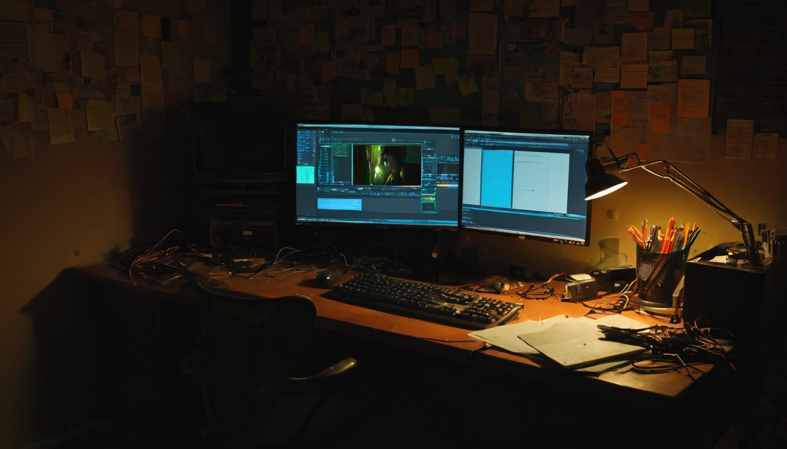
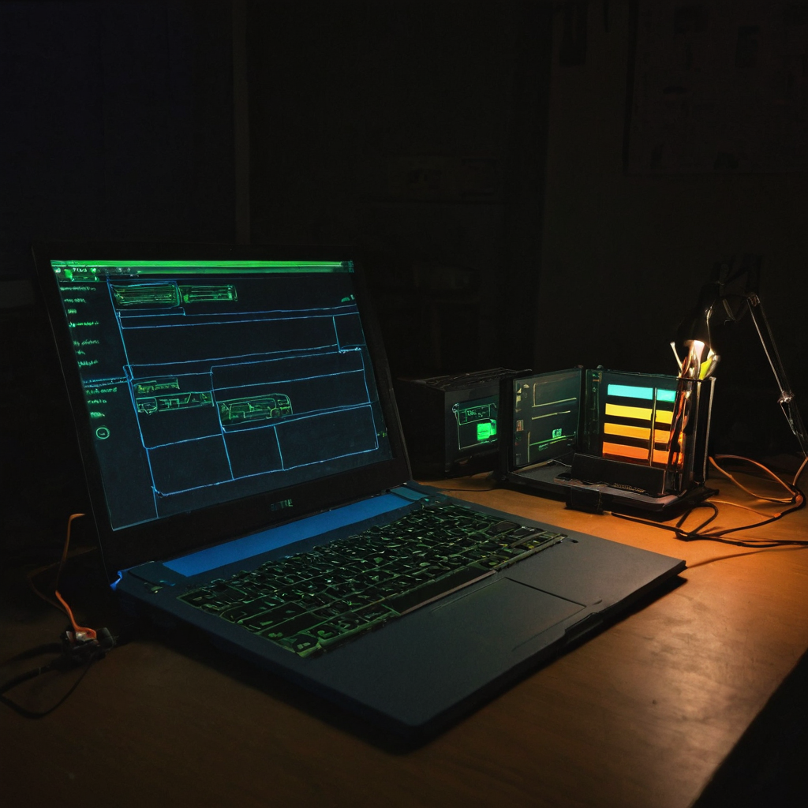

I stopped on this post because the workflow it describes sounds exactly like what I keep wishing existed. Not AI-generated clips, not a mood board. Actual editing. The kind you would normally spend hours doing in a timeline, handled by describing what you want.
@Axel_bitblaze69 posted about a tool called video-use: drop your raw footage into a folder, describe what you want to Claude Code, and it hands you back a finished final.mp4. The project is free, open source, and sitting at 17,000 GitHub stars. The post says it is different from every other "AI video editor" out there and points to a reason worth understanding.

The "AI video editor" category has mostly split into two buckets: tools that generate clips with AI, and autopilot tools that select clips from your footage with limited creative control. What the post describes is neither of those.
This is an agentic workflow. You keep your own footage. You describe what you want done. The tool executes it. That distinction matters because it keeps the creator in control of the content while offloading the mechanical work. You still bring the creative judgment. You are not handing authorship to a model. You are handing it a task list.
The 17,000 GitHub star count signals this is not a weekend experiment. That kind of traction in open source means people are using it and finding it worth passing along.
For builders and small teams, the pattern here is more interesting than any single feature. "Describe what you want, get the file back" is a workflow that used to require learning editing software or hiring someone who already had. When that runs locally, for free, on your own footage, the creative floor drops in a real and practical way.
What it does: video-use acts as an AI-powered execution layer for video editing. You supply raw footage and a plain-language instruction. It handles the processing pipeline and returns an output file.
Who it helps: creators who shoot a lot but edit slowly, small teams without a dedicated editor, developers building content pipelines, and anyone trying to automate repetitive production tasks.
Why builders should care: the design is modular. If you can describe a video task in text, you can script it, batch it, or wire it into a larger automation. The file-in, file-out structure is a clean interface for that kind of system.
What still needs work: the post does not detail limitations, and I am not going to invent them. Natural language editing at this level is early territory. Precision tasks like matching cuts to audio beats or hitting exact frame timing will depend on how well the tool interprets a given instruction. Test it on your actual use case before building a workflow around it.
What I would test first: simple trimming and basic cuts before anything complex. Then watch how it handles a vague instruction versus a specific one. That gap tells you a lot about how far you can push it.
What caught me here is the design philosophy more than the feature list. The name "video-use" reads like a nod toward "computer-use," the broader pattern of giving AI models direct tool control instead of just generating text responses. Browser-use, computer-use, now video-use. The pattern is becoming a category in its own right, and it keeps producing tools with a clear idea of what they actually need to do.
For anyone watching the creator side of these tools, this makes the "I don't have time to edit" problem meaningfully smaller. Seventeen thousand stars on a free open source project says other people are landing in the same place. @Axel_bitblaze69's framing is right: the reason this one is different is the part worth understanding.
Watch how the "describe and execute" pattern spreads into other media workflows: audio processing, image batches, document pipelines. The underlying idea is the same and it keeps appearing in new places. Also worth watching is how these tools handle longer, multi-step edit requests. That is where the capability ceiling will show itself clearly.
Source: X post by @Axel_bitblaze69, https://x.com/i/web/status/2078551452201754980, Retrieved 2026-07-18.
External references: GitHub repository for video-use (referenced in source post; direct URL not captured in bookmark data; search "video-use GitHub" to locate the repo and verify current star count and documentation).